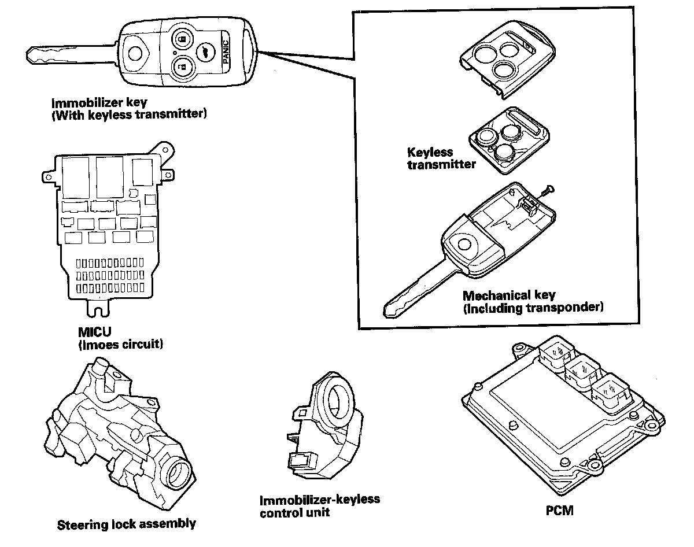

System Description
Immobilizer System
System Description
The vehicle is equipped with an immobilizer system that will disable the vehicle unless a programmed ignition key is used.
This system consists of a transponder, a keyless transmitter, immobilizer-keyless control unit, immobilizer indicator,
IMOES unit (built into the MICU), and the PCM.
When the immobilizer key (programmed by the HDS) is inserted into the ignition switch and turned to the ON (II) position, the immobilizer-keyless control unit sends power to the transponder in the ignition key. The transponder then sends a coded signal back to the immobilizer-keyless control unit which then sends a coded signal to the IMOES unit, which confirms the code and signals the PCM to continue to supply power to the fuel pump circuit.
If the wrong key has been used or the code was not received or recognized by the unit, the vehicle will not start, then shut off, and the indicator will quickly flash once, then it will blink until the ignition switch is turned OFF. When the ignition switch is turned OFF, the indicator will blink ten times to signal that the unit has reset correctly, then the indicator will go off.